Огненные рейсы
Мемориальная выставка на набережной Спортивной гавани о моряках Дальневосточного морского пароходства, чьи мирные рейсы в годы войны стали частью большой военной работы.
2025 · Владивосток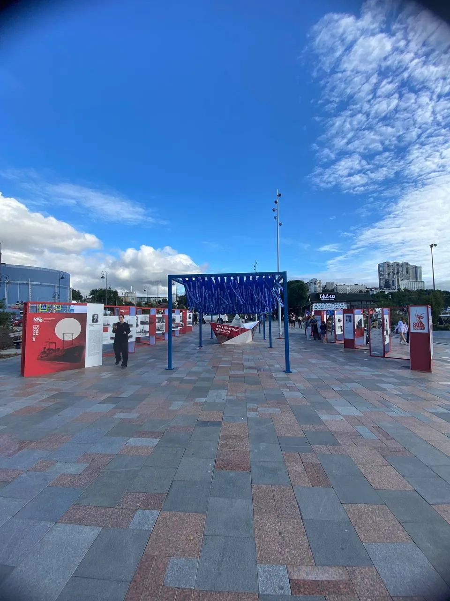
История, которую нужно было провести через пространство
Экспозиция «Огненные рейсы» была создана к 80-летию Победы и рассказывала о подвиге моряков торгового флота. В годы Великой Отечественной войны суда Дальневосточного морского пароходства перевозили стратегические грузы через Тихий океан, северные моря и Атлантику.
Торговые суда выполняли военные задачи, ходили по опасным маршрутам и подвергались атакам. Многие корабли были вооружены пушками и пулемётами, а гражданские моряки в критические моменты фактически становились бойцами.
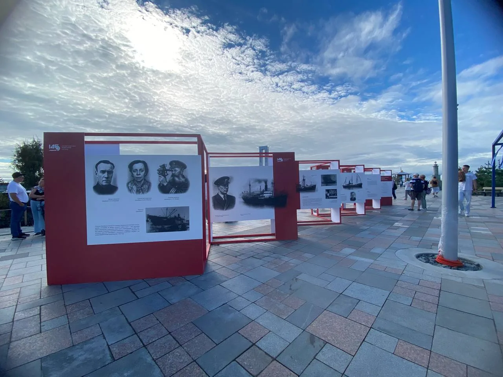
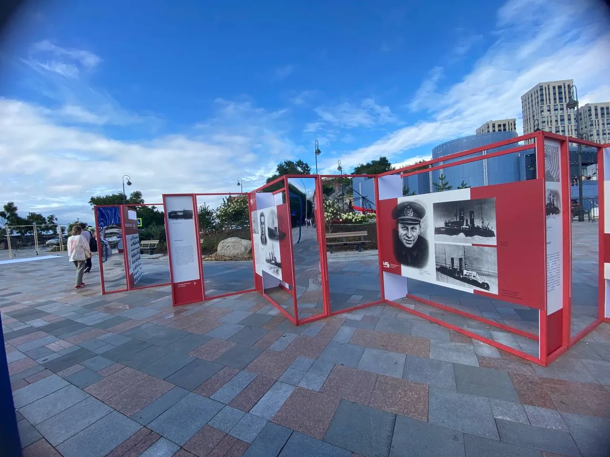
Два маршрута внутри одной экспозиции
Мы собрали две линии выставочных стен из деревянного бруса, обшили их ПВХ-пластиком и нанесли графику с фотографиями, биографиями и историями подвигов моряков.
Получился длинный проход, в котором посетитель двигался не мимо отдельных плакатов, а через последовательный рассказ — от человека к человеку, от судьбы к судьбе.
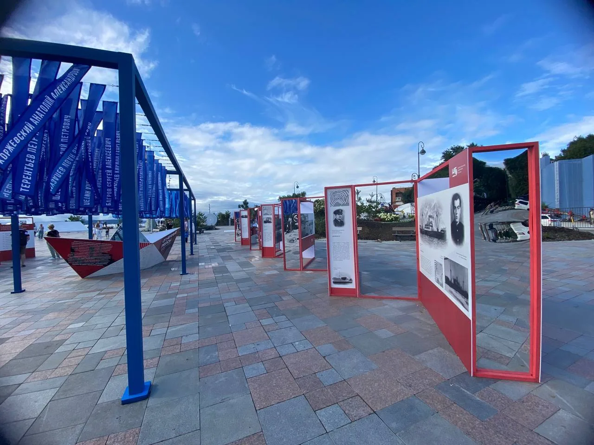
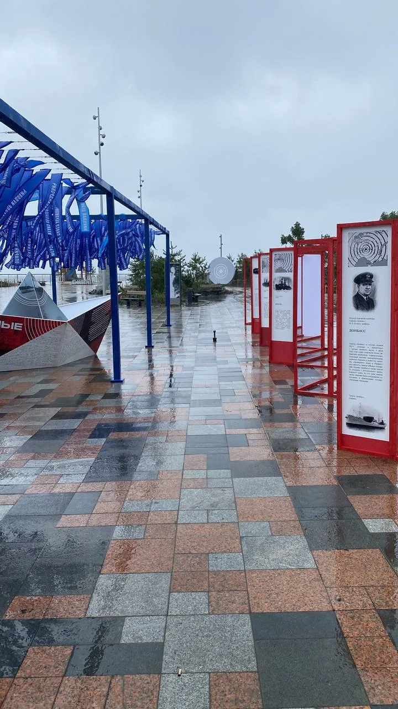
Имена над головой
Отдельным центром экспозиции стала металлическая конструкция, которую мы собирали непосредственно на набережной из заранее подготовленных профильных элементов.
По каркасу натянули металлические тросы и закрепили множество синих лент-флажков. На каждом — имя и фамилия погибшего моряка. Ветер постоянно приводил их в движение, и мемориальная часть буквально жила вместе с пространством набережной.
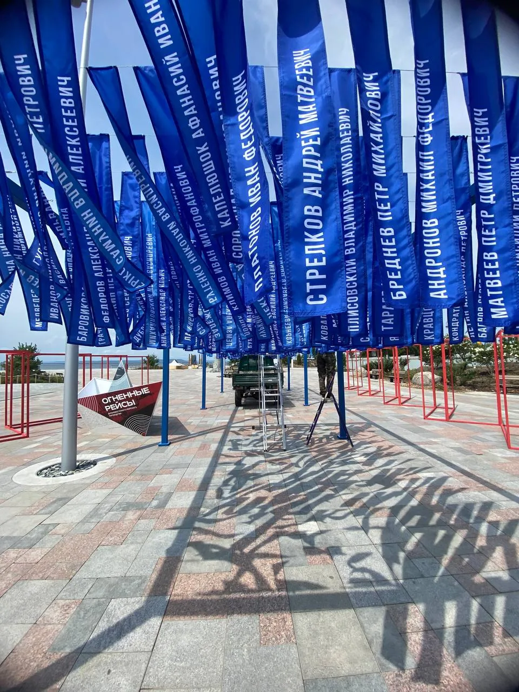
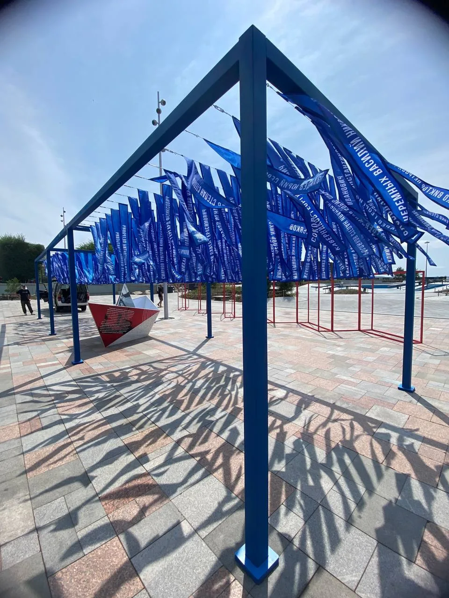
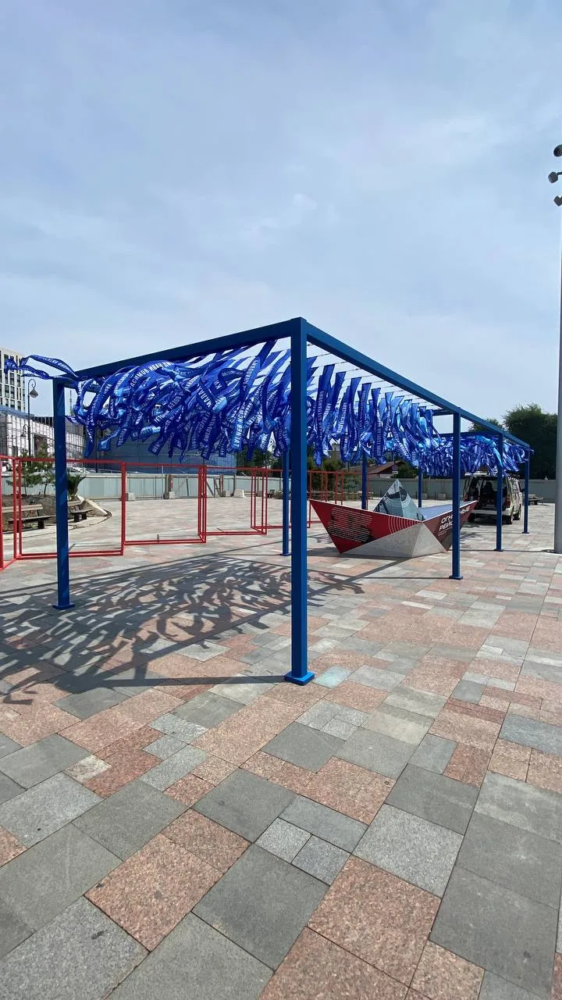
Кораблик в центре
В центре галереи разместили образ корабля — визуальную точку, вокруг которой сходилась вся композиция.
Каркас кораблика мы сварили из металлической трубы, затем обшили ПВХ-пластиком и оформили запечатанной графикой. Простая геометрия позволила сделать объект одновременно узнаваемым, лёгким визуально и достаточно прочным для уличной экспозиции.
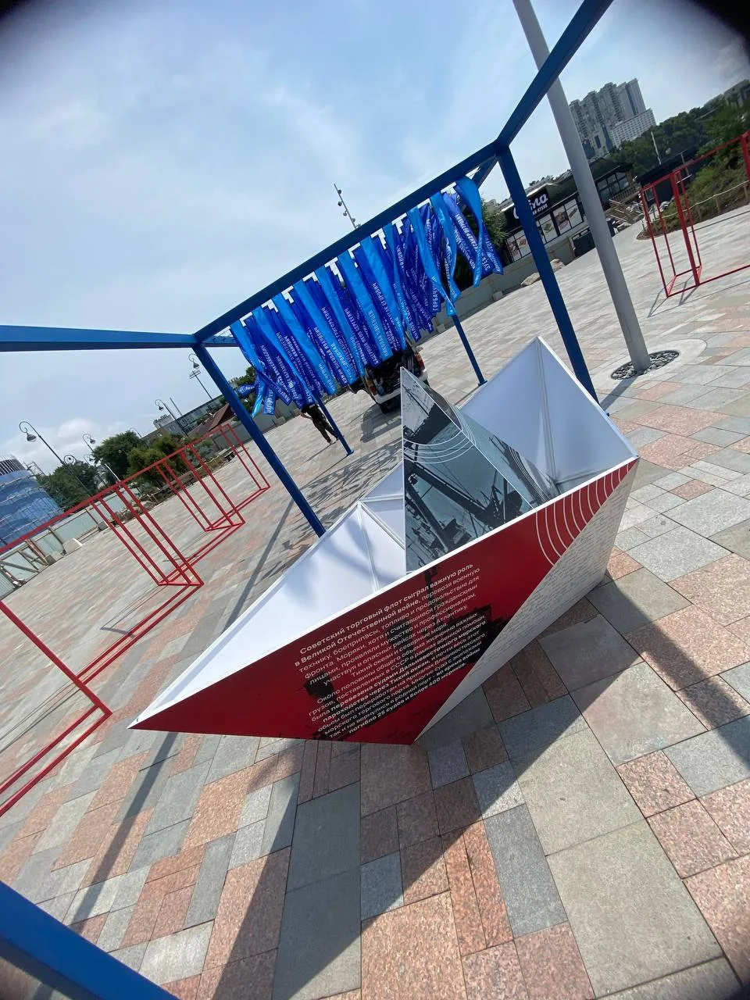
Монтаж на месте
Большая часть элементов была заранее подготовлена в производстве, но окончательная сборка проходила прямо на Спортивной набережной: сварка каркасов, установка стен, натяжение тросов, монтаж графики и центрального объекта.
Это тот случай, когда производство заканчивается не в цехе — пространство само становится частью конструкции.
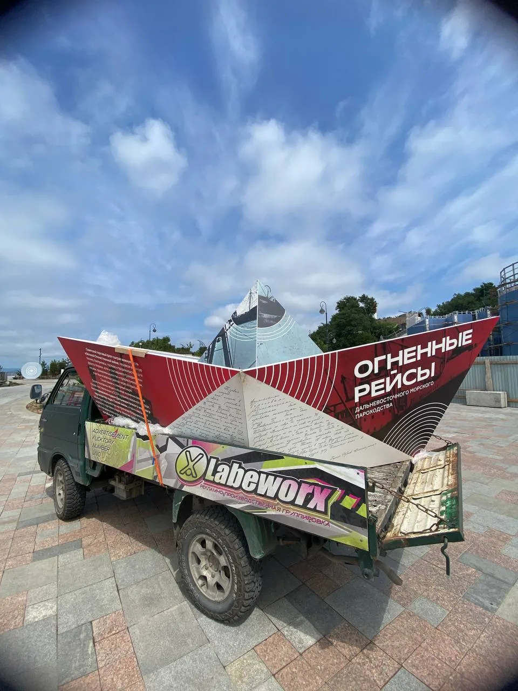
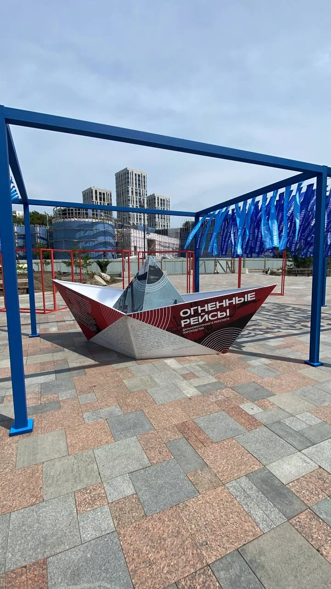
Результат
На набережной появилась не просто серия информационных стендов, а цельная мемориальная среда: портреты и биографии моряков, сотни движущихся на ветру имён и кораблик в центре — образ торгового флота, который в годы войны оказался на передовой.